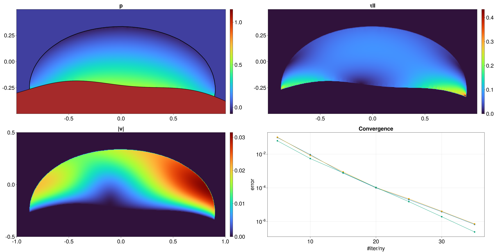

We held our third GPU4GEO Julia hackathon on March 13-17, 2023 in Black Forest (DE), focussing on a wide range of Julia topics. Hereafter a glimpse into the progress made by some participants on various Julia-related projects.
SilicateMeltProps.jl
Tobias Keller
Tobias implemented, tested, and released a Julia package that contains functions to calculate the density and viscosity of silicate melts given their major oxide composition, temperature, and pressure. The package is available here: https://github.com/kellertobs/SilicateMeltProps.jl
StaggeredKernels.jl
Casper Pranger
The package StaggeredKernels.jl that I wrote saves one the trouble of writing stencil expressions in one kernels. Instead it permits to assemble them automatically from statements like
assign!(r, grad(divergence(v)) - curl(curl(v)) - divergence(grad(v)), ((1,1), (n_x, n_y))(which tests an important vector calculus identity that should be preserved in the staggered grid - r should go to 0 as the floating points get more precise, regardless of resolution).
The package is tested and used in my other newly instated working repo: https://github.com/cpranger/DamageBreakage (see sripts/test-*.jl). Of interest to the community may be the implementation of power- and Chebyshev iteration (algorithm/[powerit,chebyshev].jl), which are used and tested in scripts/test-[powerit,chebyshev].jl. The Chebyshev and pseudo-transient iterations are fundamentally identical, but the Chebyshev iteration provides some insight into selecting optimal "damping" and "time step" parameters, given the spectral radius and -origin of the operator. (It also turns out that power-iteration is not optimal for obtaining those data, Lanczos might be much better).
Another nice feature about the Chebyshev implementation is that it predicts the residual norm after n iterations analytically. The prediction may be inaccurate for stiff systems or poorly constrained spectral data, but can nevertheless be exploited to save a large amount of global reductions.
JustRelax.jl and GeophysicalModelGenerator.jl
Pascal Aellig
Pascal worked on coupling the MagmaThermoKinematics.jl code with the JustRelax.jl framework and collaborated with Marcel Thielmann on the GeophysicalModelGenerator (see this PR).
TinyKernels.jl and FastIce.jl
Ivan Utkin & Ludovic Räss
TinyKernels.jl provides a tiny abstraction for GPU (and CPU) kernels, with full support for CUDA (Nvidia) and ROCm (AMD) backends, limited support for Metal (GPU programming on MacOS ARM) backend, and allowing for multi-threaded CPU execution. It supports Enzyme.jl for automatic differentiation of kernels.
This backend abstraction is currently used to prototype a new version of FastIce.jl that now handles free surface, complex geometries and multiples "phases" using a variational formulation adapted to the finite-difference formulation and an implicit representation of internal boundaries using a level-set approach.
GeoParams.jl
Nils Medinger
Work in progress implementing two different Peierls Creep equations in GeoParams.jl.